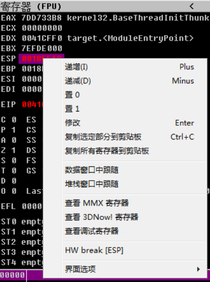
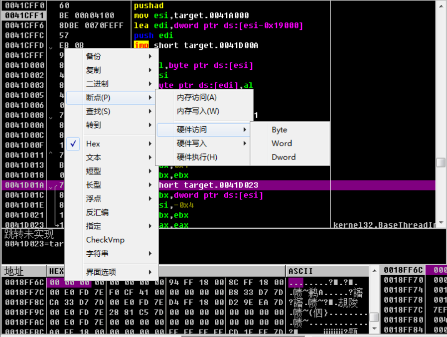
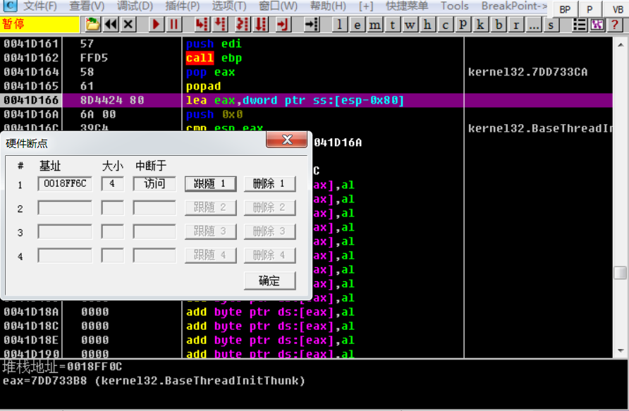
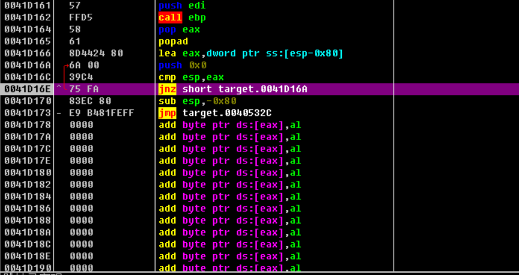
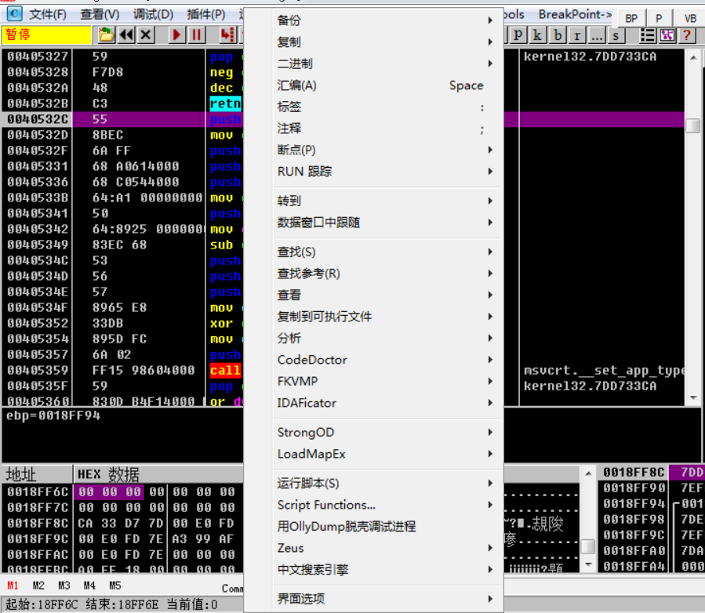
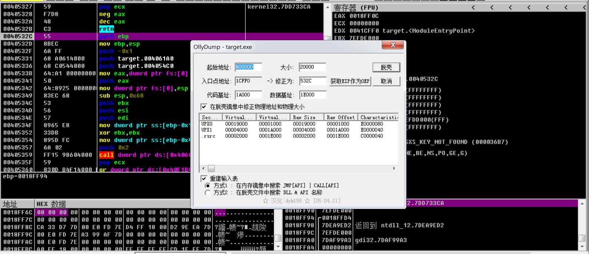

ESP定律手动脱壳
手工脱壳常用方法
- 单步跟踪法
- ESP定律法
- 内存镜像法
- 一步到达OEP
- 最后一次异常法
- 模拟跟踪法
- “SFX”法
预备知识
- PUSHAD（入栈/压栈）：代表程序的入口点
- POPAD（弹栈/出栈）：代表程序的出口点，与PUSHAD想对应，一般找到这个OEP就在附近
- OEP（Original Entry Point）：程序的入口点，软件加壳就是隐藏了OEP（或者用了假的OEP/FOEP），只要我们找到程序真正的OEP，就可以立刻脱壳
- Dump：就是转存，在加壳程序中找到入口点，将内存中进程数据保存到硬盘里（普遍用的都是LordPE工具）
- IAT（Import Address Table ）：就是导入函数的地址表，这段地址存放的就是源程序的API函数地址（通常使用ImportRce修复脱壳时的地址表）
ESP定律脱壳
ESP定律的原理：堆栈平衡原理。
适用范围：几乎全部的压缩壳，部分加密壳。
载入程序单步运行(F8)后，只有ESP、EIP寄存器内容发生变化(变红)，那么这个程序大概率可以试用ESP定律。
具体步骤：
Ollydbg打开target.exe，选择不分析代码。
F8单步执行一步，寄存器窗口只有ESP和EIP的值变红。
右键ESP，选择“数据窗口中跟踪”。
在数据窗口，对ESP位置设置硬件断点。右键断点-硬件访问，任意一个类型。
然后F9一键运行程序，会停在popad指令，即恢复源程序环境指令附近。到这里也就说明它的壳环境执行完毕，OEP的位置也就不远了。然后选择调试-硬件断点，删除硬件断点。
单步执行F8到了jnz位置后，点击它的下一行，然后F4让程序强制转到跳转下面继续运行，F8到达jmp后跳转到程序的OEP领空，确认OEP的位置。
然后，右击程序当前位置第一行代码，选择用OllyDump脱壳调试进程；
最后，我们在弹出的窗口中选择脱壳，然后，输入要另存为的文件名。该文件即为脱壳程序（没有重建IAT）。
如果没有OllyDump插件可以选择使用LordPE进行抓取内存数据。如下：
Ollydbg运行到OEP位置处，打开LordPE工具，选中脱壳程序target.exe右击纠正镜像大小（防止误读），再次右击选择完全脱壳，转存为dumped.exe。
然后修复输入表，打开ImportRCE工具，选择带壳程序进程target.exe，刚加载该程序进程的时候，它的OEP并不准确，将程序的实际OEP地址填进去，点击“自动查找IAT”，获取输入表，最后“转储到文件”选择dumped_.exe。
dumped_.exe即为脱壳程序。
ESP定律手动脱壳
http://wangchenchina.github.io/2022/04/12/ESP定律手动脱壳/